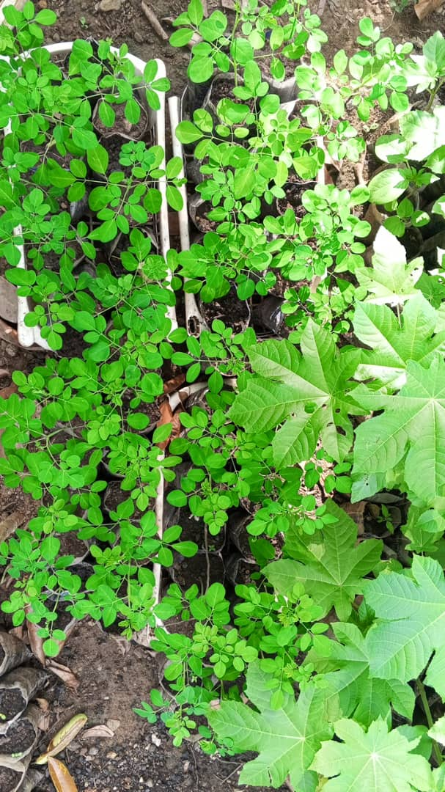
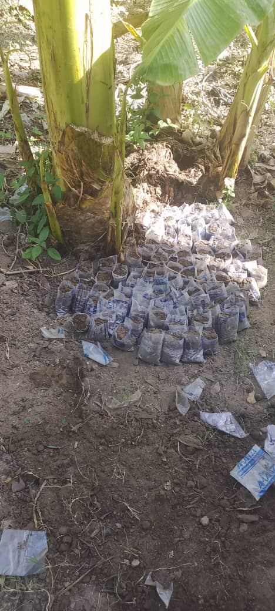

Pour entrepreneurs, propriétaires et organisations
Un Partenariat Gagnant Entre Vous et la Jeunesse Haïtienne.
Vous avez un terrain agricole, un atelier, un commerce, un projet social ou une activité génératrice de revenus ? Vous voulez contribuer au changement tout en bénéficiant d'un appui dynamique, sérieux et formé ?
Mettez un(e) jeune au travail avec KONKRET. Nous sélectionnons, formons et plaçons des jeunes haïtiens de 16 à 25 ans dans des structures comme la vôtre. Vous bénéficiez d'une main-d'oeuvre engagée, notre equipe assure le suivi sur le terrain, et vous participez directement à la reconstruction du tissu économique du Nord d'Haïti.

Organisations à vocation sociale cherchant à renforcer leurs équipes terrain avec une main-d'oeuvre locale engagée et formée.
Ecoles, centres de formation, paroisses et groupes confessionnels gérant des activités productives ou des jardins communautaires.
Entrepreneurs, propriétaires fonciers, artisans et commerçants souhaitant développer leur activité avec un appui humain structuré.

Mwen te gen yon ti biznis sou lakou a, men mwen te bezwen men. Jèn lan aprann vit e li ede m fè plis pase m te ka imajine.
Patron d'un petit atelier · Partenaire KONKRET